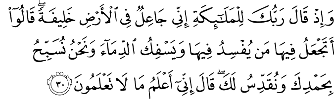

সন্মানিত ফেরেশতারা অপেক্ষা করছেন এক বিরাট ঘোষণার জন্য। সম্ভবত সৃষ্টিজগতের ইতিহাসের সবচেয়ে গুরুত্বপূর্ণ ঘটনাটি ঘটতে যাচ্ছে। আল্লাহ تعالى তাঁর এক নতুন সৃষ্টির ব্যাপারে তাদেরকে জানাতে যাচ্ছেন, যে কিনা সৃষ্টি জগতের সর্বশ্রেষ্ঠ সৃষ্টি হতে যাচ্ছে! তিনি ফেরেশতাদের সমাবেশকে উদ্দেশ্য করে বললেন—

যখন তোমার প্রভু ফেরেশতাদেরকে বলেছিলেন, “আমি পৃথিবীতে একজন প্রতিনিধি নিযুক্ত করতে যাচ্ছি।” ফেরেশতারা জিজ্ঞেস করেছিল, “আপনি কি এর মধ্যে (পৃথিবীতে) এমন একজনকে নিযুক্ত করবেন, যে বিশৃঙ্খলা সৃষ্টি করবে এবং রক্তপাত ঘটাবে, যেখানে কিনা আমরা আপনার পবিত্রতাকে প্রশংসা ভরে বর্ণনা করছি এবং আপনার নিষ্কলুষতাকে ঘোষণা করছি?” তিনি বলেছিলেন, “আমি যা জানি, তোমরা তা জানো না।” [বাকারাহ ৩০]
প্রশ্ন হলো, কীভাবে ফেরেশতারা জানল যে, মানুষ বিশৃঙ্খলা সৃষ্টি করবে এবং রক্তপাত ঘটাবে? তারা তো মানুষকে আগে দেখেনি, কারণ মানুষ তখনও সৃষ্টি হয়নি। আল্লাহ تعالى যখন ফেরেশতাদেরকে প্রতিনিধির ধারণাটি দিলেন, তিনি মানুষের মতো ভাষা ব্যবহার করে, একটা “প্রতিনিধি” শব্দ ব্যবহার করে ফেরেশতাদেরকে বলেননি। ফেরেশতাদের সাথে আল্লাহর تعالى যোগাযোগের প্রক্রিয়া, আর মানুষের সাথে মানুষের ভাষা ব্যবহার করে যোগাযোগের প্রক্রিয়া এক নয়। তিনি ফেরেশতাদেরকে প্রতিনিধি বলতে কী বোঝায়, তার একটা সম্পূর্ণ ধারণা দিয়েছিলেন।[৪]
{kind=link}
কু’রআনে এধরনের কল্পনাতীত ঐশ্বরিক ঘটনাগুলোকে অত্যন্ত সংক্ষেপে বর্ণনা করা হয়, যেখানে কোনো ধরনের অপ্রয়োজনীয় বর্ণনা থাকে না। যেমন, “আমি হাত, পা, চোখ, কান সম্বলিত চামড়ায় ঢাকা একটা প্রাণী তৈরি করতে যাচ্ছি, যার ভেতরে ভালোবাসা, রাগ, ঘৃণা, ভয়, ঈর্ষা ইত্যাদি আবেগ থাকবে, যারা ক্ষুধা পেলে কান্নাকাটি করবে, কোনো কিছু মনের মতো না হলে গাল ফুলিয়ে বসে থাকবে…”—এধরনের অপ্রয়োজনীয় চমকপ্রদ বিস্তারিত বর্ণনা, যাতে শিক্ষণীয় বা পথ প্রদর্শক কিছু নেই, তা আল্লাহ تعالى কু’রআনে দেন না। কু’রআন কোনো গালগল্পের বই নয়। এতে আল্লাহ تعالى যে ঘটনাগুলোই বর্ণনা করেছেন, তার প্রত্যেকটিতেই আমাদের জন্য অনেক কিছু শেখার, চিন্তা করার এবং উপলব্ধির বিষয় রয়েছে।[৬]
যেমন, এই আয়াতে একটি অসাধারণ শিক্ষণীয় ব্যাপার আছে। মহান আল্লাহর تعالى কোনোই দরকার ছিল না,তিনি কী করতে যাচ্ছেন, সে ব্যাপারে ফেরেশতাদের জানানোর। তিনি তাঁর ইচ্ছামত মানুষ বানিয়ে সোজা বলে দিতে পারতেন, “ফেরেশতারা: আমি মানুষ বানিয়েছি, যাও সিজদা করো।” কিন্তু না, তিনি আগে থেকেই ফেরেশতাদের জানালেন এবং শুধু তাই নয়, তিনি তাদেরকে মত প্রকাশের স্বাধীনতাও দিলেন।
এথেকে আমরা একটা বিরাট শিক্ষা পাই যে, ক্ষমতা থাকলেই স্বেচ্ছাচারিতা করার কারণ নেই। কোনো গুরুত্বপূর্ণ সিদ্ধান্ত নেওয়ার আগে, সেই সিদ্ধান্তের কারণে যারা প্রভাবিত হবে, তাদের সাথে আলোচনা করা উচিত।
স্বামী যদি একদিন এসে স্ত্রীকে বলে, “বউ, আমি একটা নতুন গাড়ি কিনে এনেছি, নিচে পার্ক করা আছে। যাও, দেখে আসো।”—তাহলে সেটা স্বেচ্ছাচারিতা। বউ যদি একদিন সন্ধ্যায় শপিং করে এসে বলে, “ওগো, আমি আজকে একটা সোনার আংটি কিনলাম, মাত্র ৫ লাখ টাকা, দেখো তো আমার হাতে মানায় কি না?”—তাহলে সেটা স্বেচ্ছাচারিতা। একই ভাবে, সন্তান যদি একদিন এসে বাবা-মাকে বলে, “মা, বাবা, আমি সিদ্ধান্ত নিয়েছি আমি আর পড়াশুনা করব না। কালকে থেকে ইসলামের দাওয়াতের কাজে ফুলটাইম ঘুরে বেড়াব”— সেটাও স্বেচ্ছাচারিতা।
অনেক সময় কোনো কাজ আমাদের নিজের কাছে অনেক গুরুত্বপূর্ণ বা সঠিক মনে হতে পারে এবং আমরা ভাবতে পারি যে, “বলতে গেলেই তো সমস্যা, হাজারটা কথা শুনতে হবে, তারচেয়ে কাজটা করে তারপর জানাই।” কিন্তু সূরা বাকারাহ-এর এই আয়াতটি আমাদেরকে এটাই শেখায় যে, এধরণের স্বেচ্ছাচারিতার মনোভাব মহান আল্লাহর تعالى মতো সর্বোচ্চ ক্ষমতাবান স্রষ্টার মধ্যেও নেই, আমাদের থাকার তো প্রশ্নই উঠে না।[৪] বরং মহান স্রষ্টা একদিন তাঁর কিছু সৃষ্টির সাথে আলোচনা করেছিলেন—এই অসাধারণ ঘটনায় আমাদের স্রষ্টা تعالى যে কত মহান, সেটা আবারও প্রমাণিত হয়।
ফেরেশতারা আল্লাহর تعالى কাছ থেকে এই ‘প্রতিনিধির’ ব্যাপারে সম্পূর্ণ ধারণা পাওয়ার পরেই জানতে চেয়েছিল, কেন তিনি এরকম একটি সৃষ্টি পৃথিবীতে পাঠাবেন, যে কি না সেখানে গিয়ে বিশৃঙ্খলা সৃষ্টি করবে এবং রক্তপাত ঘটাবে। তারা তাদের সীমিত জ্ঞান এবং চিন্তার ক্ষমতা থেকে বুঝতে পারেনি, কেন আল্লাহ تعالى এরকম একটি প্রাণী সৃষ্টি করবেন, যেখানে কি না তারা সবসময় আল্লাহর تعالى মহত্ত্ব বর্ণনা করছে, তাঁর সৃষ্টিজগতের দায়িত্ব সুষ্ঠুভাবে পালন করছে।
সুতরাং এই প্রশ্ন থেকে বোঝা যায়, আল্লাহ تعالى মানুষকে যে গুরু দায়িত্ব দিয়েছেন, তার জন্য প্রয়োজন ছিল চিন্তার স্বাধীনতা, যার একটি পার্শ্ব প্রতিক্রিয়া হলো বিশৃঙ্খলা, রক্তপাত ঘটাবার ক্ষমতা। আল্লাহ تعالى তা ভালো করেই জানেন, এবং তিনি সিদ্ধান্ত নিয়েছেন সেই গুরু দায়িত্ব এতটাই গুরুত্বপূর্ণ যে, এর পার্শ্ব-প্রতিক্রিয়াগুলো উপেক্ষা করা যায়।[৩]
আল্লাহ تعالى সিদ্ধান্ত নিয়েছিলেন, তিনি পৃথিবীর দায়িত্ব মানুষের হাতে ছেড়ে দিবেন, যারা পৃথিবীর সম্পদকে ব্যবহার করে পৃথিবীকে পরিবর্তন করবে, সভ্যতার সূচনা করবে, এবং আল্লাহর تعالى মহান উদ্দেশ্যকে বাস্তবায়ন করবে—যেটা করার সামর্থ্য ফেরেশতাদের নেই।
ফেরেশতা এবং মানুষের মধ্যে অনেক পার্থক্য রয়েছে। সেই পার্থক্যগুলোই মানুষকে বিশেষ যোগ্যতা দিয়েছে পৃথিবীর বুকে আধিপত্য করার।[৩] ফেরেশতাদের এই উপলব্ধি করার সীমাবদ্ধতাকেই এই আয়াতে বলা হয়েছে—
… আমি যা জানি, তোমরা তা জানো না। [বাকারাহ ৩০]
এই আয়াত থেকে একটা গুরুত্বপূর্ণ ব্যাপার জানা যায়—মানুষকে আল্লাহ تعالى অনেক ক্ষমতা দিয়ে পাঠিয়েছেন পৃথিবীতে। তিনি মানুষকে খালিফা (যার ক্ষমতা, কর্তৃত্ব এবং অধিকার রয়েছে) হিসেবে পৃথিবীতে পাঠিয়েছেন।[৫] আল্লাহর تعالى দৃষ্টিতে মানুষ যে একটি অত্যন্ত সন্মানিত সৃষ্টি, তা এই ‘খালিফা’ শব্দটি থেকে বোঝা যায়। খালিফা এমন একজন, যাকে কেউ কোনো ক্ষমতা দিয়েছে, এবং সেই ক্ষমতা বাস্তবায়ন করার জন্য তাকে অধিকার দেওয়া হয়েছে। খালিফার নিজস্ব কোনো ক্ষমতা নেই, তাকে সব ক্ষমতা এবং ক্ষমতা ব্যবহারের অধিকার অন্য কেউ দেয়। খালিফা যদি নিজের খেয়াল মতো ক্ষমতা ব্যবহার শুরু করে, তাহলে সেটা হবে স্বেচ্ছাচারিতা, অন্যায়, শাস্তি পাবার যোগ্য অপরাধ। খালিফা বিচারের ঊর্ধ্বে নয়, তাকে তার কাজের জন্য জবাবদিহি করতে হবে।[৩]
তিনি আদমকে শিখিয়েছিলেন সব কিছুর নাম। তারপর তিনি ফেরেশতাদেরকে সেগুলো দেখিয়ে বলেছিলেন, “আমাকে এগুলোর নাম বলো, যদি তোমরা সত্যিই পারো [বা সত্যবাদী হও]”। [বাকারাহ ৩১]
মানুষ তার সকল ধারণাকে ভাব দিয়ে প্রকাশ করতে পারে, ভাষা দিয়ে চিহ্নিত করতে পারে। মানুষের যদি ভাষা ব্যবহারের ক্ষমতা না থাকত, সাংকেতিক চিহ্ন ব্যবহার করতে না পারত, তাহলে গণিত, বিজ্ঞান, সাহিত্য কিছুই সৃষ্টি হতো না। নামকরণ করার ক্ষমতা মানুষের অন্যতম বৈশিষ্ট্য। এই বৈশিষ্ট্য আছে দেখেই আজকে আমি ‘চটপটি’ বললে আপনি বুঝতে পারেন আমি কী বোঝাচ্ছি। আমার ভেতরের একটি আবেগময় অনুভূতিকে ‘স্মৃতিকাতরতা’ বললে, আপনি বুঝতে পারেন, আমি আসলে কী অনুভব করছি। মানুষের এই যে নামকরণের ক্ষমতা, সৃষ্টিজগতের সকল ধারণাগুলোকে বিশেষভাবে চিহ্নিত করার ক্ষমতা, এই চিহ্নগুলো ব্যবহার করে অ্যাবস্ট্র্যাক্ট চিন্তা করার ক্ষমতা—একেই আল্লাহ تعالى ‘সব কিছুর নাম’ হিসেবে বলেছেন।[২][৩] যদি আমাদের এই ক্ষমতা না থাকত, তাহলে আমাদের জীবন কতটা সীমাবদ্ধ হয়ে যেত একবার চিন্তা করে দেখুন? যতবারই আমি আপনাকে ‘চটপটি’ সম্পর্কে কিছু বলতে যেতাম, আপনাকে আমার চটপটি খাইয়ে দেখাতে হতো, আমি কী ব্যাপারে বলতে যাচ্ছি। আমাদের চিন্তা ভাবনা বানরদের মতো খুবই সীমাবদ্ধ হয়ে যেত। কোনোদিন আমরা গণিত ব্যবহার করে কীভাবে মহাবিশ্ব সৃষ্টি হয়েছিল, তা অত্যন্ত সুন্দর এবং সূক্ষ্মভাবে বর্ণনা করতে পারতাম না।
ফেরেশতাদের জ্ঞান তাদের দায়িত্বের মধ্যে সীমাবদ্ধ। যেমন, যে-ফেরেশতা বাতাসের দায়িত্বে নিয়োজিত, তার জ্ঞান বাতাসের মধ্যেই সীমাবদ্ধ। যার কাজ পানি নিয়ে, সে শুধুই পানির জ্ঞান রাখে। কিন্তু মানুষের ক্ষমতা আছে বিভিন্ন ধরনের বিষয়ে জ্ঞান রাখার, চিন্তা করে নতুন জ্ঞান সঞ্চয় করার, জ্ঞানকে প্রজ্ঞাতে পরিণত করার। মানুষের জ্ঞান অর্জনের যদিও সীমাবদ্ধতা রয়েছে, যেমন বাতাসের ব্যাপারে ফেরেশতা যা জানে, তার পুরো জ্ঞান মানুষ হয়তো কখনও অর্জন করতে পারবে না, কিন্তু মানুষের জ্ঞানের পরিধি বিশাল।[৩]
{kind=link}
তারা (ফেরেশতারা) বলেছিলেন, “সমস্ত মর্যাদা আপনার! আমাদেরকে আপনি যা শিখিয়েছেন তার বাইরে আমাদের কোনোই জ্ঞান নেই। নিশ্চয়ই আপনিই, শুধুই আপনি সব জানেন, সবচেয়ে প্রজ্ঞাময়!” তিনি বলেছিলেন, “আদম, ওদেরকে এগুলোর নামগুলো বলে দাও।” যখন সে(আদম) তাদেরকে নামগুলো বলে দিলো, তিনি বলেছিলেন, “আমি কি তোমাদেরকে বলিনি যে, আকাশ এবং পৃথিবীর মধ্যে যা কিছু অজানা রয়েছে, তার সব আমি জানি? যা তোমরা প্রকাশ করো এবং যা তোমরা গোপন করো, তার সব আমি জানি।” [বাকারাহ ৩২-৩৩]
এই আয়াত দুটি আমাদেরকে ইতিহাসের একটি অসাধারণ মুহূর্তে নিয়ে যায়। মানুষ তার শ্রেষ্ঠত্ব ফেরেশতাদের কাছে প্রমাণ করেছে। আল্লাহ تعالى গর্ব নিয়ে ফেরেশতাদেরকে দেখাচ্ছেন, তিনি কী অসাধারণ এক প্রাণী সৃষ্টি করেছেন, যা ফেরেশতাদের ক্ষমতাকেও কিছু দিক থেকে ছাড়িয়ে গেছে। তিনি ফেরেশতাদেরকে দেখিয়ে দিলেন যে, তারা যে মনে করতো মানুষের খালি খারাপ দিক আছে, তা ঠিক নয়। মানুষের অনেক ভালো দিকও আছে, তার জ্ঞানের পরিধি ফেরেশতাদের থেকেও বেশি।[৩] আদম (আ) ফেরেশতাদের সমাবেশে মানুষের ক্ষমতা প্রমাণ করে দিলেন। ফেরেশতারা মেনে নিলো যে, মানুষের কিছু অসাধারণ ক্ষমতা আছে, যা তাদের নেই। শুধু তাই না, এই আয়াতের শেষে একটি সাংঘাতিক ব্যাপার বলা হলো—“যা তোমরা গোপন করো, তার সব আমি জানি।”
ফেরেশতারা আল্লাহর تعالى কাছে গোপন করে! ফেরেশতারা কী এমন সৃষ্টি নয় যে, তারা শুধুই আল্লাহর দেওয়া নির্দেশ অনুসারে কাজ করে, অনেকটা রোবটের মতো? তাদের যদি চিন্তার স্বাধীনতা না থাকে, তাহলে তারা কীভাবে গোপন করে? অনেক ‘আধুনিক’ মুসলিম পণ্ডিত দাবি করেন, ফেরেশতারা হচ্ছে আসলে মহাবিশ্ব পরিচালনায় নিয়োজিত শক্তিগুলো, যেমন মধ্যাকর্ষণ শক্তি, অণু-পরমাণুর মধ্যে নিয়োজিত আন্তঃআণবিক বল, মহাবিশ্ব পরিচালনার জন্য পদার্থ বিজ্ঞানের আইনগুলো ইত্যাদি। তাহলে কীভাবে তারা কোনো কিছু গোপন করে, কারণ গোপন করতে হলে তো ব্যক্তিত্ব থাকতে হবে?
এই আয়াত থেকে এটাই প্রমাণিত হয় যে, সবাই না হলেও, অন্তত কিছু ফেরেশতা রয়েছে, যাদের একধরনের ব্যক্তিত্ব রয়েছে, যার কারণে তারা গোপন চিন্তা করতে পারে। তারা যন্ত্রের মতো ব্যক্তিত্বহীন নয়। কিন্তু প্রশ্ন হলো, ফেরেশতারা এখানে কী গোপন করছিল?
মানুষ সৃষ্টির আগে ফেরেশতারা ধরে নিয়েছিল যে, আল্লাহ تعالى এমন কিছু সৃষ্টি করবেন না, যা তাদের থেকে উন্নত, বেশি জ্ঞান ধারণ করতে সক্ষম। কিন্তু আল্লাহর تعالى পরিকল্পনা ছিল যে, তিনি এমন একটি প্রাণী সৃষ্টি করবেন, যা সৃষ্টি জগতের অন্য সকল প্রাণী থেকে উন্নত হবে এবং বেশি জ্ঞানী হতে সক্ষম হবে। একারণেই আল্লাহ تعالى ফেরেশতাদের সমাবেশে সেদিন তাদেরকে বলে দিলেন যে, তিনি ভালো করেই জানতেন তারা গোপনে কী ভাবছিল, সেটা তারা আল্লাহর تعالى কাছে প্রকাশ করুক, আর না করুক।[৪]
এই আয়াতে আরেকটি শেখার ব্যাপার রয়েছে। আল্লাহ تعالى কিন্তু প্রকাশ করে দেননি তারা কী গোপন করছিল। তিনি ইচ্ছা করলেই আদমের عليه السلام সামনে বলে দিতে পারতেন, “আদম: ফেরেশতারা তোমাকে নিয়ে অমুক, অমুক গোপন চিন্তা করেছিল।” কিন্তু না, তিনি আবারও তাঁর মহত্ত্ব থেকে আমাদেরকে একটি গুরুত্বপূর্ণ শিক্ষা দিয়েছেন—কারও গোপন ব্যাপার তার সামনেই অন্যের কাছে প্রকাশ্যে ফাঁস করে তাকে বিব্রত না করার।
যেমন, ধরুন আপনার মা আপনার বাসায় বেড়াতে এসেছেন। তিনি আজকে সবাইকে চা বানিয়ে খাওয়াচ্ছেন। আপনার স্ত্রী চায়ে চুমুক দিচ্ছেন, আর মা’র চায়ের প্রশংসা করছেন। আর তখন আপনি বলা শুরু করলেন, “তুমি বলতে না যে, তুমি মা’র থেকে ভালো চা বানাও, মা’র চায়ে চিনি বেশি হয়, লিকার কম হয়? দেখো মা কতো ভালো চা বানায়।” এই কথা বলে আপনি শুধুই যে আপনার স্ত্রীকে বিব্রতকর পরিস্থিতে ফেললেন তা-ই নয়, আপনি তাদের মধ্যে একধরনের প্রতিযোগিতামুলক মনোভাব, এমনকি হিংসার মনোভাবও তৈরি করলেন, যেটা তাদের দুজনের জন্যই খারাপ হতে পারে।
এই আয়াতে ফেরেশতারা বলছে, سُبْحَانَكَ (সুবহানাকা) যার বাংলা সাধারণত করা হয়, “আপনি পবিত্র।” “সুবহান আল্লাহ”—কে বাংলায় বলা হয়, “আল্লাহ মহা পবিত্র।” সুবহান আল্লাহ শব্দটির আসলে অর্থ হচ্ছে, আল্লাহর تعالى কোনো ত্রুটি, অসম্পূর্ণতা, সীমাবদ্ধতা নেই। মানুষের যে সব ত্রুটির ধারণা আছে, সৃষ্টির মধ্যে যেসব নিন্দনীয় ব্যাপার আছে, যে অসম্পূর্ণতা আছে—তার সব থেকে আল্লাহ تعالى সম্পূর্ণ মুক্ত।[৭] অনেক সময় উপমহাদেশীয় মুসলিমরা আরব দেশে গিয়ে যখন দেখেন, আরবরা কোনো খারাপ ঘটনা শুনে বা আপত্তিকর কিছু দেখে “সুবহান আল্লাহ!” বলছেন, তখন তারা অবাক হয়ে ভাবেন, “আরে! আমরা তো সুবহান আল্লাহ বলি যখন সুন্দর কিছু দেখি। এরা তো দেখি উলটো কাজ করছে!” আসলে “সুবহান আল্লাহ” আমাদের তখনই বলা উচিত, যখন আমরা এমন কিছু দেখি, শুনি বা ভাবি, যা নিন্দনীয়, ত্রুটিপূর্ণ। তখন আমরা “সুবহান আল্লাহ” বলে নিজেকে মনে করিয়ে দেই যে, আল্লাহ تعالى এই সব কিছুর ঊর্ধ্বে, তিনি এসব কিছু থেকে মুক্ত। একারণেই আমরা সিজদায় মাথা নত করে আল্লাহকে تعالى বলি, “ও আল্লাহ! আপনি সব ত্রুটি মুক্ত, আপনার কোনো কিছুই খারাপ নয়, আপনি সব সীমাবদ্ধতার উর্ধে, আপনি সবার উপরে। আমাদের অনেক ত্রুটি, অনেক সীমাবদ্ধতা, অনেক খারাপ দিক আছে।”
কেউ কেউ প্রশ্ন করেন, “কেন আল্লাহ تعالى ফেরেশতাদেরকে মানুষের জ্ঞানের মতো ক্ষমতা দিয়ে পৃথিবীতে খালিফা করে পাঠালেন না? তাহলে তো আর মানুষ এসে এতো বিশৃঙ্খলা, রক্তারক্তি করতো না।” কারণ তাহলে ফেরেশতারা আর ফেরেশতা থাকত না, তারা মানুষ হয়ে যেত, মানুষের মতো স্বাধীন চিন্তা করে খারাপ কাজ করতো।[৪] ফেরেশতাদের মতো সৃষ্টি যদি স্বাধীন চিন্তা করে খেয়াল খুশি মতো কাজ শুরু করে, যুদ্ধ করে, তাহলে সৃষ্টি জগতের কি ভয়ংকর অবস্থা হবে, সেটা আমরা চিন্তাও করতে পারি না।
আবার কেউ কেউ প্রশ্ন করেন, “আদমকে (আ) শেখানো হয়েছিল দেখেই তো সে পেরেছিল, ফেরেশতাদেরকে শেখালে তারাও কি বলতে পারত না?” কু’রআনে কোথাও বলা নেই যে, শুধু আদমকেই (আ) গোপনে শেখানো হয়েছিল, বরং হতে পারে এই শেখানোর প্রক্রিয়াটি ছিল ফেরেশতা এবং আদম (আ) সবার জন্য উন্মুক্ত। শুধু আদমই (আ) মানবিক বৈশিষ্ট্যর জন্য শিখতে পেরেছিলেন, ফেরেশতাদের সেই সব বৈশিষ্ট্য না থাকায় তারা শিখতে পারেনি।[৪] যারা এধরনের প্রশ্ন করে, সন্দেহ করে, তাদের আসলে সমস্যা হচ্ছে—তারা এখনও মেনে নেয়নি যে, আল্লাহ تعالى হচ্ছে তাদের সৃষ্টিকর্তা, তাদের মহান প্রভু, আর তারা একটি মামুলি সৃষ্টি। তাদের জন্য আল্লাহ تعالى উত্তর দিয়ে রেখেছেন—
আমি যা জানি, তোমরা তা জানো না। [বাকারাহ ৩০]
শেষ করার আগে একটি ব্যাপার পরিষ্কার করা দরকার: ফেরেশতাদের এই ঘটনায় কখনও তাদের সম্পর্কে কোনো খারাপ ধারণা করবেন না যে, তারা চায়নি মানুষ সৃষ্টি হোক, বা তারা মানুষ সৃষ্টি করাতে মন খারাপ করেছে বা তাদের সাথে মানুষের কোনো ধরনের বিরোধ রয়েছে। এগুলো সব খ্রিষ্টানদের ধারণা। হলিউডের চলচ্চিত্রগুলো দেখতে দেখতে আমাদের মধ্যে ফেরেশতাদের সম্পর্কে অনেক আজে বাজে ধারণা ঢুঁকে গেছে। ফেরেশতাদের মধ্যে এ ধরনের কোনো ব্যাপার নেই। বরং তারা এতই সরল-সুন্দর-নির্মল যে, যখন আল্লাহ تعالى তাদেরকে বলেছিলেন আদম (আ) এর প্রতি অনুগত হতে, তারা সাথে সাথে তা করেছিল—
যখন ‘আমি’ ফেরেশতাদেরকে বলেছিলাম, “আদমের প্রতি শ্রদ্ধা/সমর্পণ কর”, তখন তারা শ্রদ্ধা/সমর্পণ করেছিল, তবে ইবলিস ছাড়া। সে অস্বীকার করেছিল। সে অহংকারী ছিল। আর সে অবিশ্বাসীদের [অস্বীকারকারি, অকৃতজ্ঞদের] একজন হয়ে গিয়েছিল।
কিন্তু ইবলিস নিজেকে সমর্পণ করেনি। আর সেদিন থেকে শুরু হয়েছিল দুটি প্রচণ্ড ক্ষমতাবান সৃষ্টির মধ্যে এক ভয়ংকর দ্বন্দ্ব।
- [১] নওমান আলি খানের সূরা বাকারাহ এর উপর লেকচার।
- [২] ম্যাসেজ অফ দা কু’রআন — মুহাম্মাদ আসাদ।
- [৩] তাফহিমুল কু’রআন — মাওলানা মাওদুদি।
- [৪] মা’রিফুল কু’রআন — মুফতি শাফি উসমানী।
- [৫] মুহাম্মাদ মোহার আলি — A Word for Word Meaning of The Quran
- [৬] সৈয়দ কুতব — In the Shade of the Quran
- [৭] সুবহান আল্লাহ — http://www.suhaibwebb.com/islam-studies/subhanallah-flawless/